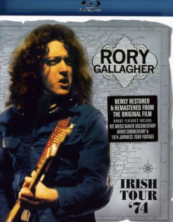

IMDB-Wertung: 0.0 / 10
IMDB-Wertung: 0.0 / 10  Metascore:
Metascore: 
01. Walk On Hot Coals
02. Tattoo’d Lady
03. Who’s That Comin‘
04. A Million Miles Away
05. Going To My Home Town
06. Cradle Rock
07. As The Crow Flies
08. Hands Up
09. Bulfrog Blues
 IMDB-Wertung: 0.0 / 10 Metascore:
01. Walk On Hot Coals
02. Tattoo’d Lady
03. Who’s That Comin‘
04. A Million Miles Away
05. Going To My Home Town
06. Cradle Rock
07. As The Crow Flies
08. Hands Up
09. Bulfrog Blues
Jahr: 2011
Dauer: 84 Minuten
FSK:
Land: USA Studio: Eagle Rock EntertainmentTonspuren:
Untertitel:
Auflösung: 1080p (1920x1080) Größe: 6604 MB
Genre: Musik
Regisseur: Thierry Amsallem
Drehbuch: Eagle Rock Entertainment
Soundtrack:
Darsteller:
Datei: X:\Musik\Rory Gallagher Irish Tour 74 (2011, FSK, 1920x1080).mkv seit 28.09.2017
Festplatte: HD Serien(SU-Z)+Dokus+Musik
 Es gibt insgesamt 134 Filme in der Gruppe 'Musik'
Es gibt insgesamt 134 Filme in der Gruppe 'Musik'